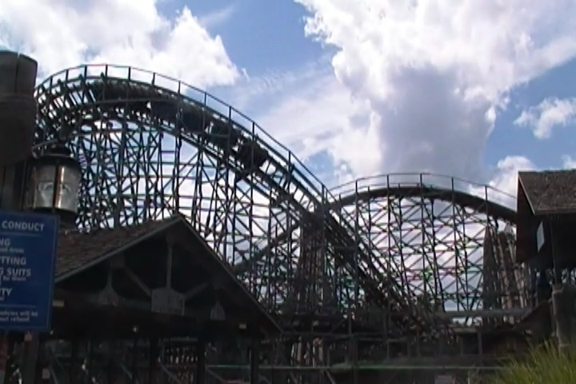
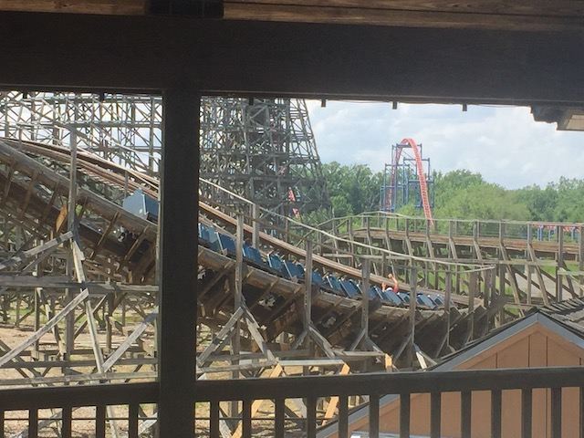
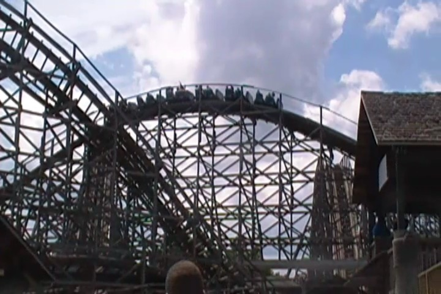
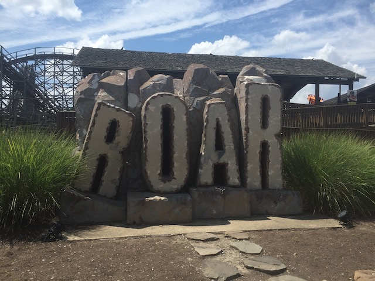

| |

Roar Review

For today's review, we're traveling back in time to when Six Flags America still existed in order to ride Roar. Some of you may be familiar with this ride as there used to actually be two Roars. However, one of them was converted into an RMC, and yeah. That's clearly a superior ride. But for the sake of strolling down memory lane, let's check out the Roar that still lived on at Six Flags America up until the parks closure. We rolled through a turn and down a small drop. It was fun. We then went through a small bump before heading up the lifthill. Nothing to see on this Roar aside from fields, and I guess Superman if you turn your head. But then, we got pulled down a nice twisty spiral drop. That drop gives a bit of speed. We then rose up a big hill and then started to get pulled down another twisty drop, leaving us with quite a bit of speed. We then twisted up into a big airtime hill. You got a little floater air during this hill (though honestly, nothing special). We then dropped back down. We then rose back up and headed straight into a turn. This big swooping turn gave us a bit of laterals. You then got a really good pop of ejector air as you plunged down a drop. You slammed through a turn before popping out of your seat through another airtime hill. You then got pinned to the side as you went through a big swooping turn. We then went over another small little hill. Again, nothing special, but hey! We were getting more airtime! =) We then headed into a nice big swooping turn. We went through a couple dips as we kept turning, but then, we dipped back down to the ground, went through one final turn, go through a couple more bunny hops, and then, we finally hit the brake run. Roar was a fun GCI. But honestly, after all the great GCIs that came after it, it's pretty safe to say that this ride was outdated. It wasn't terrible, but keeping it real. This isn't gonna be one of the mourned coasters of Six Flags America.
7/10
Location: Six Flags America
Opened: 1998
Opened: 2025
Built by: Great Coasters International
Last Ridden: July 22, 2019
I have ridden this exact same ride at the following parks.
Six Flags Discovory Kingdom
Roar Photos



Home
|